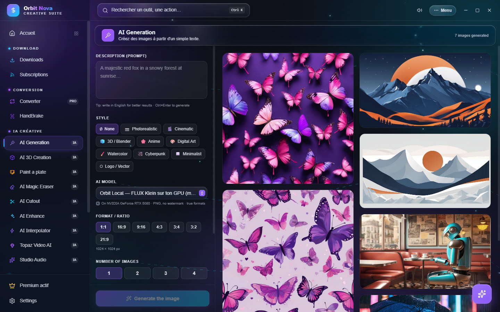
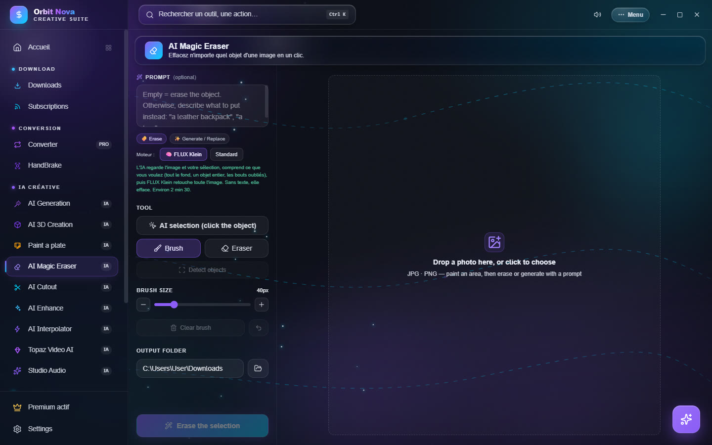
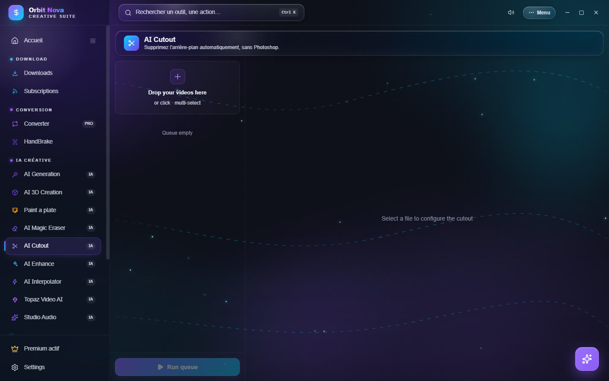
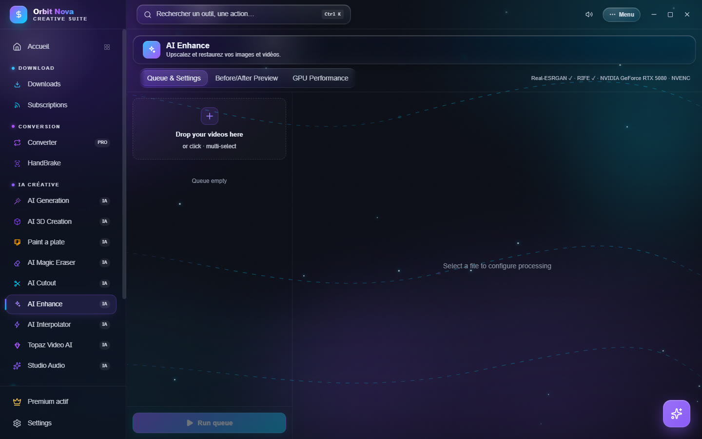

AI for images
These four tools are part of Orbit Premium. They run on your computer; the models download the first time you need them.
AI Generation
Describe an image, Orbit creates it.


- Write the Description (prompt): what you want to see, the style, the light. Auto prompt enhancement fills out a short description.
- Pick a Style: None, Photorealistic, Cinematic, 3D / Blender, Anime, Digital Art, Watercolor, Cyberpunk, Minimalist, Logo / Vector.
- Pick the AI model:
- Orbit Local — FLUX Klein on your GPU: the best understanding of descriptions, can write legible text; needs an NVIDIA card and the engine installed by Paint a plate;
- Orbit Local — SDXL on your GPU: NVIDIA card, about 7 GB to download the first time;
- Flux (free online service): for PCs without an NVIDIA card; adds a watermark and limits the size, about one image every 45 seconds.
- Set the Format / Ratio (1:1, 16:9, 9:16, 4:3, 3:4, 3:2, 21:9), the Number of images (1 to 4) and the Seed: a fixed seed gives the same image again, handy to tune a description word by word.
- Click Generate the image (or Ctrl+Enter). With the local engines, the image shows up and sharpens live while it is computed.
Each image of the gallery has its buttons: open, open the folder, Reuse prompt + seed, copy the prompt, see the logs, delete. Adding to the queue chains several descriptions.
AI Magic Eraser
Erase an object from a photo, or replace it with something else, like Photoshop's generative fill.


- Drop a photo in the area (JPG, PNG, WEBP, TIFF, AVIF…).
- Select the area to change:
- AI selection (click the object): click an object, its outline is found for you; click again to grow it, Shift+click or right-click to remove a part;
- Detect objects offers every object found in the photo;
- Brush and Eraser to paint or fix the area by hand.
- In the prompt field (optional):
- leave it empty and click 🧽 Erase: the object disappears, the background is rebuilt;
- describe what to put instead ("a leather backpack", "a tree") and click ✨ Generate / Replace.
- The result is saved in the Output folder; Undo the last removal goes back.
The Engine is chosen above the tools:
- FLUX Klein: understands the whole scene, works on the full image up to 1920 pixels; NVIDIA card and the Paint a plate engine. Used to replace (erasing always goes through LaMa, which is more reliable);
- Standard: LaMa to erase, Stable Diffusion to generate, with three levels: Fast (modest PC), Quality (powerful PC) and SDXL HQ (NVIDIA card, about 6.5 GB the first time).
To replace a background, select the background, not the person: only the selected area changes.
AI Cutout
Removes the background of a video, without a green screen.


- Drop one or more videos.
- Select a file and set:
- Model & quality: Fast (512p), Balanced (960p) or Max (source);
- Background: transparent (WebM VP9, ProRes 4444 or PNG sequence, ready for After Effects and Premiere), a background color, a blur or a background image;
- Edge refinement: soften the edges, shrink or grow the mask to remove a fringe.
- Preview (3s) shows the result over 3 seconds (the checkerboard = transparent areas).
- Cut out, or Apply to the whole queue then Run queue.
AI Enhance
Upscales, cleans and stabilizes your videos and images.


Three tabs: Queue & Settings, Before/After Preview (compare a frame before you start) and GPU Performance (live load and memory of the card).
The settings, by section:
- AI Upscale (Real-ESRGAN): model, scale or target resolution, tile size (smaller if the card has little memory), TTA mode (best quality, slower);
- Video restoration: denoise (classic and temporal), compression recovery, anti-banding, detail recovery, deinterlace, brightness, contrast, saturation, gamma;
- Stabilization in two passes, with smoothing, sensitivity and auto zoom to hide the edges;
- Frame interpolation (RIFE): output frames per second or slow motion;
- Sharpening & Export: artifact-free sharpening, format and codec.
Save your settings as a preset, then Run queue.